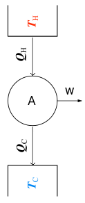

Macchine Termiche
Conversione di lavoro in calore e vice versa
La trasformazione del lavoro in calore si verifica spontaneamente quando il lavoro viene effettuato da forze dissipative ocme l'attrito. Per esempio, nell'impianto frenante di un'automobile, l'energia entra nel disco come lavoro compiuto dalle forze d'attrito tra i blocchetti dei freni e il disco in rotazione. La temperatura di quest'ultimo aumenta, e a causa della differenza di temperatura, l'energia viene ceduta all'ambiente sotto forma di calore.
Il processo inverso, la conversone del calore in lavoro è desiderabile per fini praitici. L'energia trasferita come lavoro può essere sfruttata ad esempio per sollevare un peso o per far girare un albero che aziona delle macchine o un generatore elettrico.
At first thought, it might appear that the isothermal expansion of an ideal gas might be a suitable process to consider in discussing the conversion of heat into work. In this case, there is no change of U, since T remains constant and therefore q = w, heat has been converted completely into work. This process, however involves a change of state of the gas. The volume increases and the pressure decreases until atmospheric pressure is reached, at which point the process stops. Therefore, the process of isothermal expansion cannot be used indefinitely. What is needed is a series of processes in which is brought back to its initial state, that is a cycle. Each of the processes that constitute a cycle involves either the performance of work of a flow or heat between the system and its surrounding, which consist of a heat reservoirs at higher temperature than the system and a heat reservoir at lower temperature that the system.
In 1824 a French engineer named Sadi Carnot published a study on the theoretical efficiency of steam engines. This book (Reflections on the Motive Power of Fire) pointed out that, for a heat engine to produce continuous mechanical work, it must exchange heat with two bodies at different temperatures, absorbing heat from the hot body and discarding heat to the cold body. Without a cold body for the discard of heat, the engine cannot function continuously. This is the essential idea of one form of the second law of thermodynamics. Carnot’s work had little influence at the time of its publication. Carnot worked when the caloric theory of heat held sway, and his book used this theory, incorrectly setting the heat discarded to the cold body equal to the heat absorbed from the hot body. When Carnot’s book was rediscovered in the 1840s, it caused confusion for a while, since Joule’s work had overthrown the caloric theory.
Carnot died of cholera in 1832 at age 36. His unpublished notes showed that he believed the caloric theory to be false and planned experiments to demonstrate this. These planned experiments included the vigorous agitation of liquids and measurement of “the motive power consumed and the heat produced.” Carnot’s notes stated: “Heat is simply motive power, or rather motion, which has changed its form.... [Motive] power is, in quantity, invariable in nature; it is ... never either produced or destroyed....”
Finally, about 1850, Rudolph Clausius and William Thomson (Lord Kelvin) corrected Carnot’s work to conform with the first law of thermodynamics.
There are several equivalent ways of stating the second law. We shall use the following statement, the Kelvin–Planck statement of the second law of thermody namics, due originally to William Thomson and later rephrased by Planck:
It is impossible for a system to undergo a cyclic process whose sole effects are the flow of heat into the system from a heat reservoir and the performance of an equivalent amount of work by the system on the surroundings.
By a heat reservoir or heat bath we mean a body that is in internal equilibrium at a constant temperature and that is large enough for flow of heat between it and the system to cause no significant change in the temperature of the reservoir. The second law says that it is impossible to build a cyclic machine that converts heat into work with 100% efficiency). Note that the existence of such a machine would not violate the first law, since energy is conserved in the operation of the machine. Like the first law, the second law is a generalization from experience. There are three kinds of evidence for the second law. First is the failure of anyone to construct a machine like that shown in Fig. 3.1. If such a machine were available, it could use the atmosphere as a heat reservoir, continuously withdrawing energy from the atmosphere and converting it completely to useful work. It would be nice to have such a machine, but no one has been able to build one. Second, and more convincing, is the fact that the second law leads to many conclusions about equilibrium in chemical systems, and these conclusions have been verified. For example, we shall see that the second law shows that the vapor pressure of a pure substance varies with temperature according to dP/dT = ΔH/(T ΔV), where ΔH and ΔV are the heat of vaporization and the volume change in vaporization, and this equation has been experimentally verified. Third, statistical mechanics shows that the second law follows as a consequence of certain assumptions about the molecular level. The first law tells us that work output cannot be produced by a cyclic machine without an equivalent amount of energy input. The second law tells us that it is impossible to have a cyclic machine that completely converts the random molecular energy of heat flow into the ordered motion of mechanical work. As some withas put it: The first law says you can’t win; the second law says you can’t break even. Note that the second law does not forbid the complete conversion of heat to work in a noncyclic process. Thus, if we reversibly and isothermally heat a perfect gas, the gas expands and, since ΔU = 0, the work done by the gas equals the heat input [Eq. (2.74)]. Such an expansion, however, cannot be made the basis of a continuously operating machine. Eventually, the piston will fall out of the cylinder. A continuously operating machine must use a cyclic process.
An alternative statement of the second law is the Clausius statement: It is impossible for a system to undergo a cyclic process whose sole effects are the flow of heat into the system from a cold reservoir and the flow of an equal amount of heat out of the system into a hot reservoir.
Machines that convert thermal energy via a heat interaction into mechanical work are called heat engines. By contrast, electro-chemical devices, such as batteries or fuel cells, convert chemical energy directly into electrical work without going through the intermediate step of producing a hot fluid or gas. In heat engines, a working fluid, such as air or water, is compressed, heated, expanded, and cooled in some sequence (cycle) that results in the conversion of heat into mechanical work.
Il primo Principio della termodinamica

riguarda gli scambi di energia tra un sistema e l'ambiente. Una macchina che converta il calore in lavoro, in modo ciclico, è nota come macchina termica, ne sono esempi le automobili e le macchine a vapore. All'interno della macchina è presente una sostenza della fluido motrice, che subisce una trasformazione ciclica, ad esempio un gas o un liquido come l'acqua nelle macchine a vapore.
E' possibile convertire al 100% una quantità di calore in lavoro. Un esempio è dato dal sistema frenante di un automobile; Durante la frenata, un meccanismo preme le pastiglie contro il disco (solidale alla ruota) generando così una forza d'attrito, quindi calore.
Il processo inverso la converiore del calore in lavoro, è ciò che fa funzionare una macchina termica ed è quindi più auspicabile. L'energia trasferita come lavoro può essere utilizzata a fini pratici per sollevare dei pesi, o mettere in moto un albero motore. The hot reservoir is the burning fuel and the cold reservoir is the environment to which the combustion products are exhausted
Ad esempio possiamo usare del gas contenuto all'interno di un cilindro con pistone. Assorbendo una certa quantità di calore questo espande, sollevando un peso. Una singola espansione tuttavia non è molto utile poichè una volta che la pressione del gas si è ridotta fino a eguagliare la pressione atmosferica, tutto finisce. Occorre quindi riportare il gas allo stato investendo parte del lavoro per riportarlo allo stato iniziale comprimendolo, preparandolo in questo modo per la successiva espansione. Si è realizzato in questo modo un cilco. Possiamo schematizzare una macchina termica come segue
la macchina assorbe energia sotto forma di calore, qc, da una sorgente a temperatura TH, spende parte dell'energia per compiere lavoro, w, e il resto dell'energia assorbita si dissipa nell'ambiente il serbatoio di temperatura TH come qC. Poichè in un ciclo ΔU=0, considerando un ciclo reversibile, per il primo principio abbiamo
ΔUmotore = w + qrev,c + qrev,f = 0 (5.0)
notare che la convenzione dei segni fa sì che qrev,c sia una quantità positiva e che qrev,f sia una quantità negativa.
e
ΔSmotore = δqrev,c/Tc + qrev,f/Tf = 0 (5.1)
Dalla 5.0 abbiamo che il lavoro compiuto dal motore è
-w = qrev,c + qrev,f
Il lavoro eseguito dal motore è una quantità negativa, perciò -w è una quantità positiva. Possiamo definire l'efficienza della trasformazione attraverso il rapporto tra il lavoro svolto dal motore e la quantità di calore assorbito dal serbatoio caldo. cioè
max efficienza = -w / qrev,c = (qrev,c + qrev,f) / qrev,c
L'equazione 5.1 ci dice che qrev,f = - qrev,c (Tf/Tc), pertanto l'efficienza si può esprimere nel modo seguente
max efficienza = 1 - Tf /Tc = (Tc - Tf) /Tc (5.2)
L'equazione 5.2 è un risultato sorprendente perchè è indipendente dal modello del motore o dalla sostanza motrice. Per un motore termico che lavora tra 273 K e 673 K, la massima efficienza possibile è
max efficienza = 400/673 = 60%
L'equazione 5.2 indica che si ottiene un'efficienza maggiore con macchine operanti a valori più altri di Tc o a valori più ridotti di Tf. L'efficienza è nulla se Tc = Tf, ossia non si può ricavare lavoro netto da una trasformazione isoterma ciclica. Questo è l'enunciato di Kelvin del secondo principio.